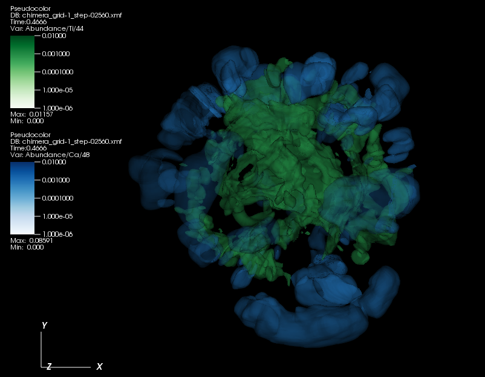

Nucleosynthesis
The origin of the heavy elements is a key scientific motivation for TEAMS.

A volume rendering of the densities of 48Ca and 44Ti from a CHIMERA simulation of the supernova originating from a first generation, 9.6 solar mass star. The stratification of the Calcium and Titanium highlights separate phases of the explosion where these isotopes are created. 48Ca is created early in the explosion, as instabilities in the supernova shock lift matter from the newly-formed neutron star. 44Ti is formed later, as the neutrino-wind heats the matter behind the supernova shock.